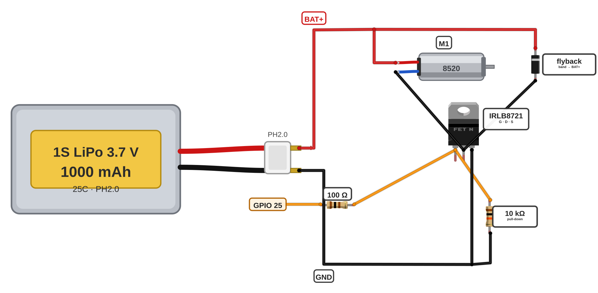

ערוץ MOSFET אחד שלם על הלוח — בסדר שהופך את הבדיקה לקלה.
הידיים על המלחם הן שלכם. המורה יושב לידכם מהרגע שהמלחם נדלק ועד שהוא מכובה ולא יוצא מהעמדה באמצע.
משקפי מגן על העיניים — כל זמן שהמלחם דולק בעמדה.
המלחם גר על המעמד שלו — כשהוא לא ביד, הוא על המעמד. אף פעם לא על השולחן.
מנקים את הקצה על הספוג הלח — אף פעם לא באצבעות.
לא נוגעים בקצה המתכת — הוא חם מאוד גם כמה דקות אחרי הכיבוי.
נגעתם בטעות במשהו חם? שוטפים מיד במים קרים מהברז וקוראים למורה.
אלה אותם ארבעה כללים מפרויקט 4. אתם כבר יודעים אותם — לכן אתם אומרים אותם, לא המורה.
הלוח שלכם יישא ארבעה ערוצים זהים. היום מלחימים אחד. ערוץ אחד נבדק לפני שהשני קיים ולכן טעות מתגלה פעם אחת ולא ארבע.
הסדר הוא הדבר היחיד שהכרטיס מכתיב לכם: קודם שני הפסים שכל השאר נתלה עליהם, אחריהם Q1, אחריו הדיודה ורק בסוף שני הנגדים. כל רכיב נכנס כשיש כבר למה להלחים אותו.

מרכיבים משקפי מגן, אומרים בקול את ארבעת הכללים שבמסגרת האדומה ורק אז מדליקים את המלחם.
גם המורה מרכיב משקפיים. הספוג רטוב, המעמד במקום והלוח מונח ישר לפניכם.
שני הפסים ראשונים. מותחים שני חוטי נחושת חשופה לרוחב הלוח — BAT+ למעלה ו-GND למטה — ומלחימים כל אחד מהם בכל חור שלישי.
הפסים האלה נושאים את כל זרם המנועים ולכן מלחימים לאורך כל הפס — בכל חור שלישי, לא רק בשני הקצוות.
Q1 — המוספט IRLB8721. מכניסים אותו כשהכיתוב פונה לצד של פד G1 והרגליים בסדר G · D · S:
הלשונית המתכתית היא ה-Drain. ארבע הלשוניות על הלוח לעולם לא נוגעות זו בזו — ולכן החורים הריקים.
D1 — דיודת ההחזר 1N5819. מלחימים אותה בין פד M1+ שעל פס BAT+ לפד M1− שהוא רגל ה-Drain, כשהטבעת פונה אל BAT+.
זו הטעות היקרה של השלב. דיודה הפוכה היא קצר על הסוללה דרך המוספט ברגע שהשער עולה — והרכיב נשרף. עוצרים אחרי הרגל הראשונה ומסתכלים על הטבעת מול התרשים.
שני הנגדים ורגל ה-Source. מזהים כל אחד מהם לפי הצבעים לפני שמלחימים:
נגד ההורדה 10kΩ הוא זה שיחזיק את השער על 0V כשה-ESP32 עוד לא מפעיל אותו. בלעדיו המנוע יכול להתחיל להסתובב לבד בזמן שהבקר עולה.
מסמנים בטוש ליד הפדים: M1 / G1 / FRONT.
הערוץ הזה יפעיל בסוף את המנוע הקדמי, דרך GPIO 25. מסמנים עכשיו, כשעוד ברור מה כאן — לא אחרי שיהיו ארבעה ערוצים דומים.
מכבים את המלחם, מושכים משיכה עדינה בכל חיבור ועוברים עם המורה על שני הדברים שקל לטעות בהם: טבעת הדיודה וסדר G · D · S.
חיבור טוב לא זז במשיכה. אם משהו זז — מלחימים אותו מחדש עכשיו, בזמן שהעמדה עוד פתוחה.
1 BAT+ rail bare copper, solder every 3rd hole 2 GND rail bare copper, solder every 3rd hole 3 Q1 IRLB8721 G · D · S, label toward G1 pad 4 D1 1N5819 band -> BAT+ 5 100 Ω G1 pad -> Gate 6 10 kΩ Gate -> GND rail 7 Source -> GND rail 8 marker: M1 / G1 / FRONT 9 gentle tug on every joint
על הלוח יושב ערוץ אחד שלם ונראה בדיוק כמו התרשים: שני פסי נחושת לרוחב, מוספט אחד עם הכיתוב לצד G1, דיודה שהטבעת שלה פונה כלפי BAT+, שני נגדים ורגל Source יושבת על פס GND. לצד הערוץ נשארו לפחות שני חורים ריקים.
הערוץ עדיין לא מקבל חשמל — הבדיקה במולטימטר היא הכרטיסייה הבאה, לפני שערוץ 2 בכלל קיים.